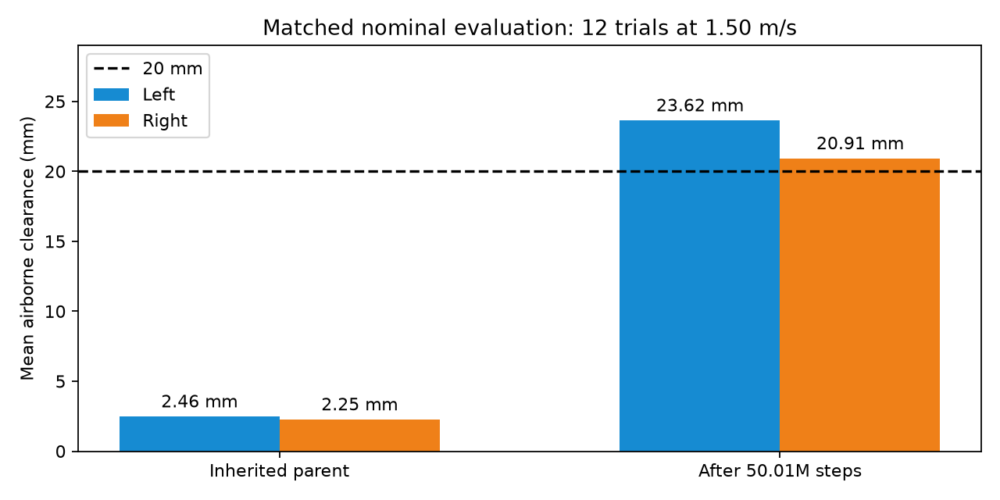
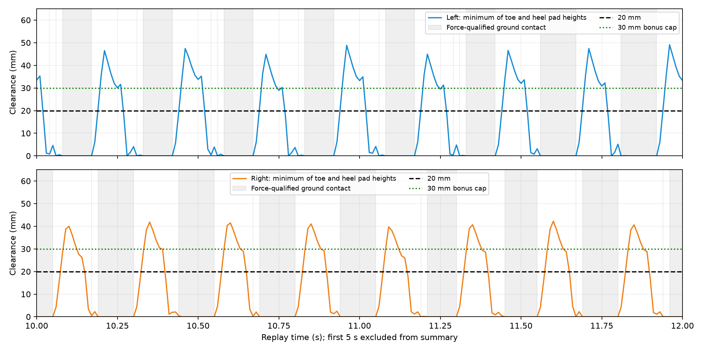
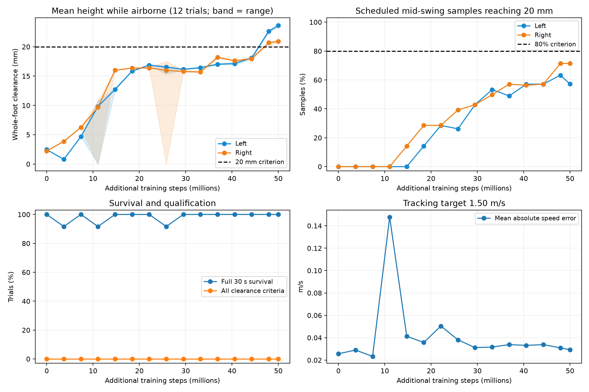

Job 3230928 completed 50,006,016 additional steps in 3h30m21s. Final checkpoint is also the best clearance candidate. In 12 nominal 30 s trials, all survive; mean airborne clearance is 23.62 mm left / 20.91 mm right, versus 2.46 / 2.25 mm for the inherited parent under the same evaluation protocol.
Progress, but not fully qualified: only 57.2% / 71.4% of scheduled mid-swing samples reach 20 mm; the required minimum is 80% per foot. Mean height alone hides this timing/consistency shortfall. Speed error is 0.029 m/s; 99-100 valid cycles per foot after warmup.
Replay discrepancy: the first standalone pinned-command replay (batch size 1) falls at 3.67 s, despite the original evaluation's 12/12 survival. That failure is retained below. A second recording preserves the saved reset command and batch size 12. Batch size and command-reset handling both differ between these protocols, so the cause is not isolated; successful evaluation does not establish reliable standalone startup.
Final / best clearance candidate, nominal greedy MJX replay, seed 1000, first trial of a batch of 12; saved fixed command retained. Both cameras show the same instant. Left foot blue; right foot orange. Playback ends at first termination, with no reset splicing. See numerical replay metadata for actual duration and outcome.
Same checkpoint and nominal plant, one environment with pinned command: fall at 3.67 s. No steady-state mean is computed because the episode ends before the 5 s warmup.
Flat-feet v1 best at 184.32M steps; archived nominal seed-1000 replay. Both clips have the same target, but the earlier recording used a batch of three speeds, so initial random samples are not paired.


Whole-foot height is the lower of the oriented heel/toe pad surfaces. Grey bands show force-qualified contact; proximity alone is not a contact. Trace uses frozen-model forward kinematics aligned to saved MJX contact flags.

Nominal evaluations do not establish robustness to pushes, different speeds or hardware. Qualification retains the full existing criteria; it was not relaxed after training.
Experiment report | Evaluation data | Replay measurements | Earlier clearance baseline